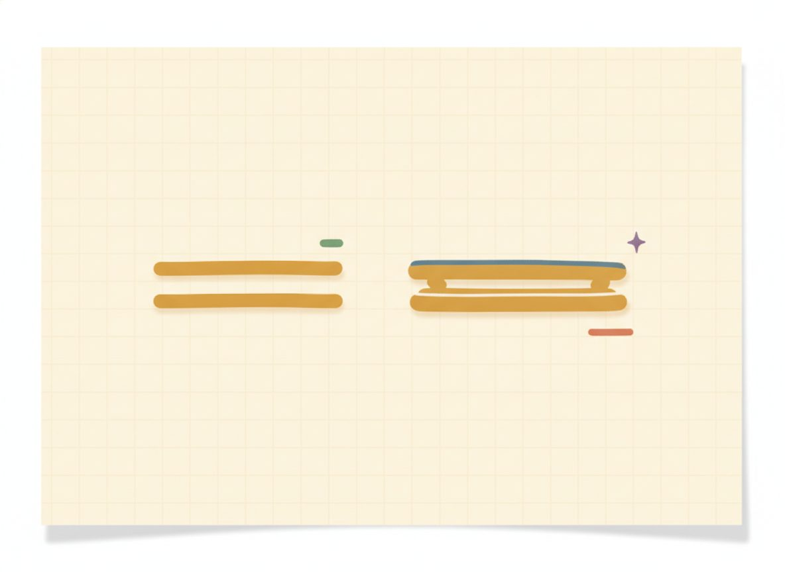

Special cases & applications
Two lines usually cross at one point, but not always. Lay any two lines on a plane and exactly one of three things happens: they cross once, they run parallel and never meet, or they sit right on top of each other. This lesson handles the two unusual cases, and then puts the whole toolkit to work on word problems, which are the real reason systems are worth learning.
The three outcomes are easiest to hold as one picture, tied to the slopes you know from Unit 5. Different slopes, and the lines tilt differently, so they have to cross somewhere: that's one solution. Same slope but different intercepts, and they march along parallel forever, never touching: that's no solution. Same slope and same intercept, and they're secretly the same line drawn twice, so every point on it works: that's infinitely many solutions.

| The two lines… | How many solutions | What the algebra leaves |
|---|---|---|
| cross once (different slopes) | one solution, the (x, y) where they meet | a normal value, e.g. x = 4 |
| are parallel (same slope, different intercept) | no solution, they never meet | a false statement, e.g. 0 = 5 |
| are the same line (identical after simplifying) | infinitely many, every point on the line works | an always-true statement, e.g. 0 = 0 |
These two cases work differently from a normal system, and it catches people off guard the first time. When you solve a normal system, the variables stay around long enough to give you a value. But in these two special cases, the variables all vanish partway through, and what's left over is the signal that tells you which case you're in.
If the leftover statement is false, like 0 = 5, no numbers can ever make it true, so there's no solution: that's the parallel case. If the leftover is always true, like 0 = 0, then every point already works, so there are infinitely many: that's the same-line case. So when the x's and y's disappear, don't panic; read the statement they leave behind.
New terms / the three outcomes: every pair of lines does exactly one of three things, summarized in the table above.
- No solution: the parallel-lines case. Whatever method you use, the variables vanish and you're left with something false (like 0 = 5). Nothing can make it true, so nothing solves the system.
- Infinitely many solutions: the same-line case (one equation is just a multiple of the other). The variables vanish and you're left with something always true (like 0 = 0). Every point on the shared line works.
For the word problems in the second half, the move is the one from Unit 6, now done twice: name your two unknowns, turn the two facts in the story into two equations, solve by whichever method fits, and check your answer against the story, not just the algebra. A useful habit when you write the two equations is to keep them on different units: one equation counting how many of something, the other counting dollars or amount. That keeps you from accidentally writing the same fact twice.
Worked example
7.4.w1 Example 1, no solution (parallel). Solve y = 2x + 1 and y = 2x − 3. Both have y alone, so substitute the first into the second: 2x + 1 = 2x − 3. Now subtract 2x from both sides, and the x's vanish: 1 = −3. That's false. No number anywhere makes 1 equal −3. So there's no solution. And it lines up with the picture: both lines have slope 2 but different intercepts, so they're parallel and never meet.
7.4.w2 Example 2, no solution in standard form. Solve 2x − y = 3 and 4x − 2y = 1. Scale the first equation by 2 to match the second's x-term: 2(2x − y) = 2(3) gives 4x − 2y = 6. Now subtract the second equation from it: (4x − 2y) − (4x − 2y) = 6 − 1. The whole left side goes to zero, leaving 0 = 5, which is false. So no solution. (The two lines are parallel; the scaling just made it visible.)
7.4.w3 Example 3, infinitely many (same line). Solve x + y = 4 and 2x + 2y = 8. Look closely: the second equation is just the first one times 2. To confirm with the algebra, scale the first by 2 to get 2x + 2y = 8, then subtract the second: 0 = 0, always true. The two equations are the very same line, so there are infinitely many solutions. Every point on x + y = 4 works, such as (0, 4), (1, 3), and (4, 0). "Infinitely many" isn't a vague shrug, though; it's a precise set: it's all the pairs (x, y) with x + y = 4. Describing it in those plain words is enough.
A warning right where these two cases get mixed up: it's easy to call 0 = 0 "no solution" and 0 = 5 "infinitely many," because both feel like dead ends. They're backwards. A true leftover means everything works, so infinitely many; a false leftover means nothing works, so none. Anchor it on the meaning: true says yes to every point, false says yes to no point.
7.4.w4 Example 4, an application with tickets. A theater sells adult tickets at $8 and child tickets at $5. One night it sold 200 tickets for $1300 total. How many of each? Start by naming the unknowns and turning each fact into an equation. Let a = adult tickets and c = child tickets. One fact counts tickets, the other counts dollars: $$a + c = 200 \qquad 8a + 5c = 1300.$$ Substitution is clean here. From the first equation, c = 200 − a. Pour that into the second: 8a + 5(200 − a) = 1300. Distribute the 5 to both terms inside: 8a + 1000 − 5a = 1300. Combine the a's: 3a + 1000 = 1300, so 3a = 300 and a = 100. Partner: c = 200 − 100 = 100. Now check against the story: 100 + 100 = 200 tickets, and 8(100) + 5(100) = 800 + 500 = 1300 dollars. Both fit, so it's 100 adult, 100 child.
7.4.w5 Example 5, an application with coins, less symmetric. A jar has 15 coins, all quarters and dimes, worth $2.70 (270 cents). How many of each? Let q = quarters and d = dimes. One equation counts coins, the other counts cents (a quarter is 25 cents, a dime is 10): $$q + d = 15 \qquad 25q + 10d = 270.$$ Elimination fits well. Scale the first equation by 10 so the d-terms match: 10q + 10d = 150. Subtract that from the second: (25q + 10d) − (10q + 10d) = 270 − 150, so the d's go to zero and 15q = 120, giving q = 8. Partner: d = 15 − 8 = 7. Check the story: 8 + 7 = 15 coins, and 25(8) + 10(7) = 200 + 70 = 270 cents. Both fit, so it's 8 quarters, 7 dimes.
7.4.w6 Example 6, an application with a mixture. How many liters of a 20% salt solution and a 50% salt solution should you mix to make 30 liters of a 30% solution? Let x = liters of the 20% solution and y = liters of the 50% solution. One equation counts liters of liquid, the other counts liters of actual salt. The target, 30 L at 30%, holds 0.30 · 30 = 9 L of salt: $$x + y = 30 \qquad 0.20x + 0.50y = 9.$$ Decimals are easier to handle cleared, so multiply the salt equation by 10: 2x + 5y = 90. Then scale the liter equation by 2: 2x + 2y = 60. Subtract: (2x + 5y) − (2x + 2y) = 90 − 60, the x's go to zero, and 3y = 30, so y = 10. Partner: x = 30 − 10 = 20. Check the story: 20 + 10 = 30 liters, and the salt is 0.20(20) + 0.50(10) = 4 + 5 = 9 L, which is 30% of 30. Both fit: 20 L of the 20% solution, 10 L of the 50%. (This is built like a coin problem: one equation counts the amount of liquid, one counts the active ingredient.)
7.4.w7 Example 7, an application with perimeter. A rectangle's length is 4 more than its width, and its perimeter is 28. Find the length and width as a system. Let l = length and w = width. The two facts become two equations. Perimeter is the distance all the way around, which for a rectangle is twice the length plus twice the width: $$l = w + 4 \qquad 2l + 2w = 28.$$ Length is already alone, so substitute l = w + 4 into the perimeter equation: 2(w + 4) + 2w = 28. Distribute the 2: 2w + 8 + 2w = 28. Combine: 4w + 8 = 28, so 4w = 20 and w = 5. Partner: l = 5 + 4 = 9. Check the story: length 9 is 4 more than width 5, and the perimeter is 2(9) + 2(5) = 18 + 10 = 28. Both fit: width 5, length 9.
One last thing about word-problem answers: check them against the story, not only the math. If a system hands you a negative number of tickets or half a coin, the algebra may be flawless but the setup slipped somewhere. That strange answer is a signal to look back at how you wrote the two equations.
Check yourself
- 7.4.c1 "You solve a system and reach 7 = 7. How many solutions, and what do the graphs look like?" (Infinitely many. A leftover that's always true means every point already works, so the two equations are the same line, one drawn right on top of the other.)
- 7.4.c2 "Two lines have the same slope. What two situations are still possible, and how does the algebra tell them apart?" (Either they're parallel with different intercepts, meaning no solution, and the algebra leaves a false statement like 0 = 5. Or they're the same line, meaning infinitely many, and the algebra leaves a true statement like 0 = 0. The leftover statement tells you which.)
- 7.4.c3 "A problem says '30 nickels and dimes worth $2.40.' Name your two variables and write the two equations, but don't solve yet." (Let n = nickels and d = dimes. One equation counts coins, one counts cents: n + d = 30 and 5n + 10d = 240.)
Set A: classify (one solution / none / infinitely many); if one, give it
Reveal answerHide to problem 1
No solution — same slope 3, different intercepts (parallel); substituting gives 2 = -5, false.Reveal answerHide to problem 2
Infinitely many — eq.2 is eq.1 times 3 (same line); reduces to 0 = 0.Reveal answerHide to problem 3
One solution, (3, 4) — 4 = 3 + 1, 4 = -3 + 7.Set B: applications (set up two equations, solve, check the story)
Reveal answerHide to problem 4
x + y = 30, x = y + 6 → (y + 6) + y = 30 ⇒ y = 12, x = 18. The numbers are 18 and 12 (18 + 12 = 30, 18 = 12 + 6).Reveal answerHide to problem 5
2b + f = 11, b + 2f = 10 → eliminate: scale eq.2 by 2 → 2b + 4f = 20, subtract eq.1 → 3f = 9, f = 3, then b = 4. Burger $4, fries $3 (2(4)+3 = 11, 4 + 2(3) = 10).Reveal answerHide to problem 6
Let b = boat speed in still water, c = current. Downstream the speeds add, upstream they subtract: b + c = 20, b − c = 4 → add → 2b = 24, b = 12, then c = 8. Boat 12 mph, current 8 mph (12 + 8 = 20, 12 − 8 = 4).Reveal answerHide to problem 7
Let x = mL of 10%, y = mL of 40%; one equation counts mL, one counts acid (25% of 40 = 10 mL): x + y = 40, 0.10x + 0.40y = 10. Clear decimals (×10): x + 4y = 100; subtract x + y = 40 → 3y = 60 ⇒ y = 20, then x = 20. 20 mL of each (20 + 20 = 40; 0.10(20) + 0.40(20) = 2 + 8 = 10 mL acid).Reveal answerHide to problem 8
Let l = length, w = width: l = w + 2, 2l + 2w = 24. Substitute → 2(w + 2) + 2w = 24 ⇒ 4w + 4 = 24 ⇒ w = 5, then l = 7. Width 5, length 7 (perimeter 2(7) + 2(5) = 24, and 7 = 5 + 2).You can now solve a system three ways and tell which fits.
Graphing shows you what a solution means, the one point on both lines, but only reads clean whole-number crossings. Substitution is the short path when a variable is already alone: pour its expression into the other equation and you're down to one unknown. Elimination is the workhorse for equations in standard form: scale if you need to, then add for opposite coefficients or subtract for matching ones, so a variable goes to zero.
When the variables all vanish, read what's left: a false statement means no solution (parallel lines), a true one means infinitely many (the same line). And whichever road you take, the answer is an ordered pair, confirmed by putting it back into both equations.